Tiny Atlas Quarterly is a photography-led lifestyle travel brand and social community that brings personal travel to life: in our magazine, through events and products and on immersive adventures.
CURRENT ISSUE: CITY 2017


TINY ATLAS TRIPS
Tiny Atlas Trips bring our stories to life in real time on incredible excursions across the globe. Produced in collaboration with adventure sports company, Earth Missions and analog creativity specialists Allswell, Tiny Atlas Trips are created for the public as well as influencers and can be customized for brands.